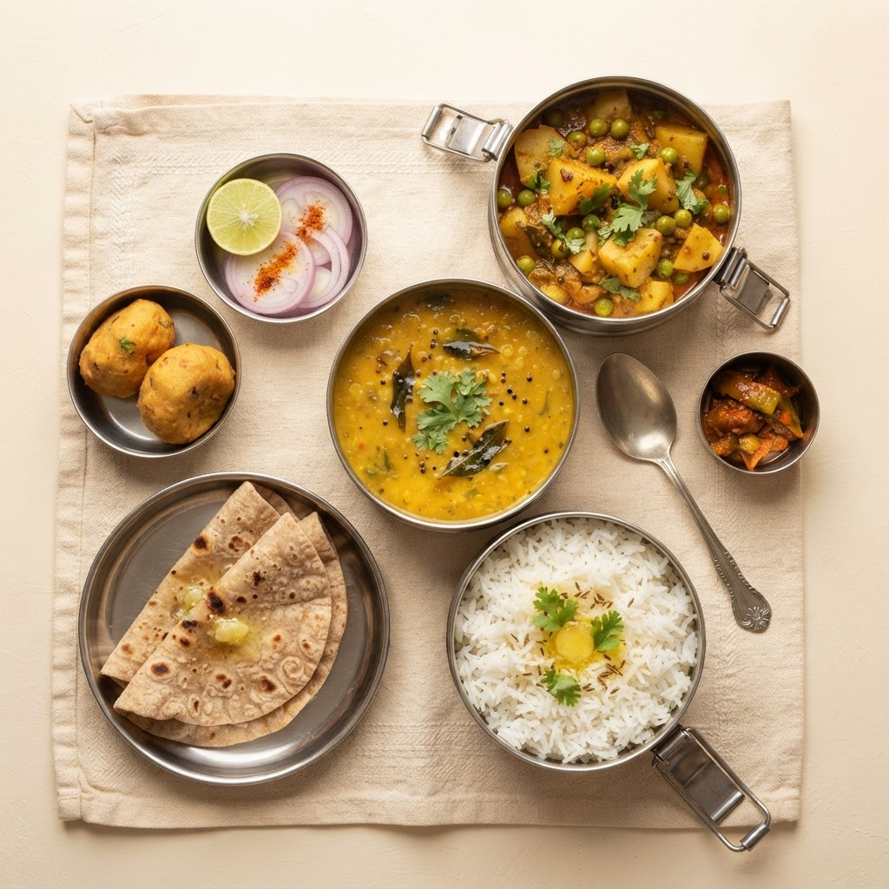

100% Pure & Authentic
Best Homemade Food & Tiffin Service in Kalyan West
Experience authentic Maharashtrian meals crafted with love. Order fresh Veg Tiffins, traditional Puranpoli, Ukdiche Modak, and premium Diwali Faral with fast home delivery in Kalyan West.

Authentic Ghar Ka Khana
Loved by Kalyan-kars
See what our regulars have to say about our best-selling homemade dishes.
★★★★★
"The best tiffin service in Kalyan West! The food feels exactly like home. The sabji is fresh, less oily, and delivery is always on time."

Anjali Deshmukh
Loves: Veg Tiffin★★★★★
"Kadu Kaki's Puranpoli is the best I've ever had. It literally melts in the mouth. Highly recommend their home delivery service!"

Rahul Kulkarni
Loves: Puranpoli★★★★★
"Ordered their Diwali Faral and Ukdiche Modak. Authentic Maharashtrian taste, perfect sweetness, and amazing packaging."